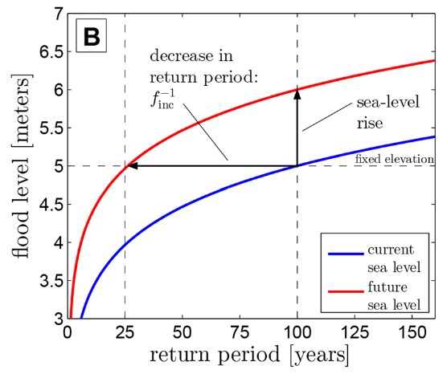
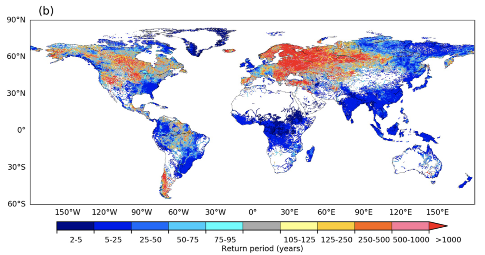
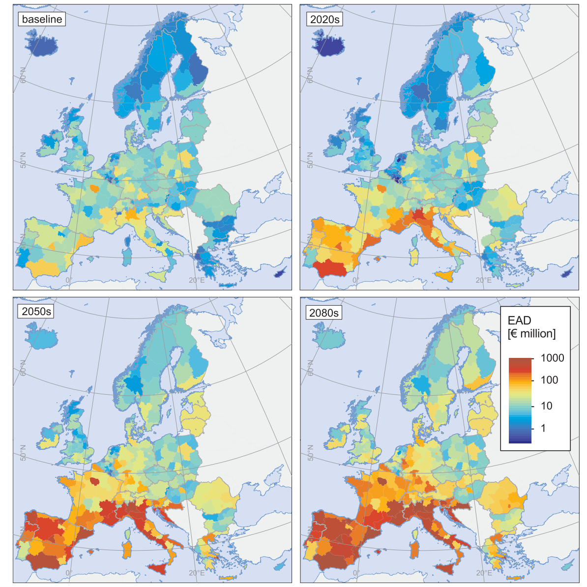
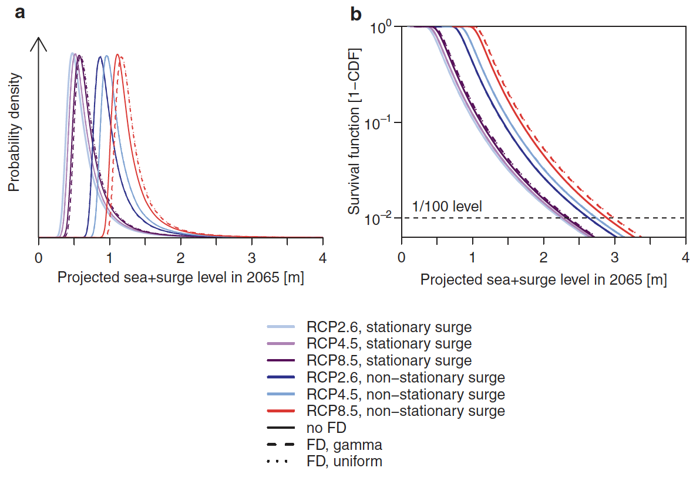

In this lecture we will discuss how climate model outputs can be used to predict future changes in hazards that can impact infrastructure. We will distinguish between short-term extreme events (flooding, hurricanes, storm surges, landslides) and more long-term chronic changes (temperature rise, sea-level rise).
In mini-lecture 12.2, we identified that climate change might alter the occurrence of hazards in the future. When evaluating changes in future hazards we often distinguish between changes in the frequency and the magnitude of events. This can be illustrated using the example of changes in the occurrence of coastal flooding due to sea-level rise, as shown in in Figure 12.3.1 (Vitousek et al. 2017).
Some key concepts to define include:
Frequency: Frequency changes describe the increase or decrease of the occurrence of an event with a certain magnitude (horizontal line in Figure 12.3.1). In this example, a 100-year event becomes a 25-year event, meaning that the frequency increases by a factor four.
Magnitude: Magnitude changes describe the increase or decrease of the severity of an event with a certain frequency (vertical line in Figure 12.3.1). In this example, the magnitude of a 100-year event changes from 5m to 6m (increases by 20%).
In addition, we often differentiate between changes in the occurrence of short-term extreme events and more long-term chronic changes. For instance, climate change might affect the frequency of extreme rainfall, leading to more intense flooding. On the other hand, a rise in mean sea levels will slowly increase the salinity levels in tidal areas.
Therefore, the way we account for climate change in our modelling framework depends on the hazard under consideration. Before starting infrastructure design, it is important to identify what hazards are affecting your infrastructure system and how the underlying drivers might change in the future.

Figure 12.3.1: The change in frequency (horizontal line) and magnitude (vertical line) of different return periods of coastal flooding (Vitousek et al. 2017)
Some hazards are more sensitive to climate change than others. This reflects the differences in the underlying physical processes that drive the hazard, and to what extent an increase in the global mean temperature can change these processes.
Heatwaves and wildfires are directly influenced by changes in global mean surface temperature, and hence scale almost linearly with an increase in the temperature.
On the other hand, floods and droughts are mainly driven by changes in precipitation patterns. In general, wet places are expected to get wetter, and dry places are expected to get drier. Total precipitation values are, however, unevenly distributed, with a few very wet days contributing to most precipitation. Climate projections show that precipitation may become even more uneven in the future. For instance, one fifth of the projected increase in rainfalls occurs during the two wettest days of the year (Pendergrass and Knutti 2018), thereby changing patterns of floods and droughts.
How climate change may alter the occurrence of tropical cyclones is harder to predict, given the complexity of physical processes at play. These processes cannot be resolved in the current climate models. Rising temperatures will increase the moisture content available to fuel tropical cyclones, making it likely that they will be more intense (Knutson et al. 2020).
Storm surges from tropical cyclones are likely to increase because of the increase in sea-levels. At the moment, global mean sea-level rise is estimated at around 3mm per year (Nerem et al. 2018).
Earthquakes are unaffected by climate and will not change in the future because of climate change.
We will discuss some of the mean trends identified in the literature on expected changes in extreme hazards. These estimates are derived by using the output from climate models and including them in a hazard model.
Hirabayashi et al. analysed changes in frequency of flooding for the 21st century (see Figure 12.3.2) by comparing the changes in 100-year return period. A larger increase in flood hazard (lower return period) is found for Asia, Africa and South America, while parts of Europe will experience less frequent floods (Hirabayashi et al. 2021).
Sea-level rise will make coastal flooding more likely. In most areas a doubling of flood frequency is expected, while in some areas (e.g. Tropics) a doubling of flooding is already expected in 2050 (Vitousek et al. 2017).
Changes in tropical cyclones are harder to predict. Currently, it is expected that the global frequency of occurrence of tropical cyclones will either decrease or remain unchanged, while wind speed and precipitation rates are expected to increase (Knutson et al. 2020).
How droughts might change depends on the definition of a drought adopted. An increasing frequency of drought is expected over large land areas resulting from either decreased and/or increased evaporation (Dai 2013).
Landslides might also become more frequent due to the increase in intense precipitation events. For instance, a recent study showed that landslide activity in China and Nepal could see a 30 to 70% increase in the future (NASA 2020).

Figure 12.3.2: The multi-modal mean change in the global 100-year flood return period over the 21st century for Representative Concentration Pathway (RCP) 8.5 (Hirabayashi et al. 2021)
Using the modelled hazard output, we can project the increase in the exposure and risk of people and infrastructure in the future due to climate change alone. These numbers assume that the current population and amount, value and use of infrastructure remains unchanged.
The number of people exposed to future river flooding may increase 7-14 times over the 21st century (Hirabayashi et al. 2013), while the number of people exposed to coastal flooding is projected to increase 2.5 times by 2100 (Kulp and Strauss 2019).
Infrastructure exposure will also increase dramatically. For instance, sea-level rise will threaten cargo flows in ports in Europe and put 900 million tonnes of goods at risk (Christodoulou, Christidis, and Demirel 2019), while also increasing the risk of disruptions to global airline ports by a factor of 17-69 by 2100 due to the inundation of major low-lying airports (Yesudian and Dawson 2021).
What hazard will cause the largest rise in risk depends on the type of infrastructure and the location. In Europe (see Figure 12.3.3), for example, it is found that the damage to critical infrastructure (energy, transport, industry, and social) will likely increase 10-fold by the end of the century, leading to EUR3.4 billion damages per year (Forzieri et al. 2018). Drought and heatwaves are the largest drivers in south Europe, while coastal flooding is the strongest driver overall. The damages from river flooding, wind storms and wildfires also increase, but are more region-specific. Figure 12.3.3. shows the evolution of expected annual damages over time and the geographical distribution of infrastructure damages.

Figure 12.3.3: The expected annual damages to infrastructure assets for multiple hazards. The figures show the baseline scenario and the change in risk for 2020, 2050 and 2080 (Forzieri et al. 2018)
As discussed, the way in which climate change affects hazard occurrence can be projected using climate scenarios that feed into climate models. The climate model outputs can then be incorporated into a hazard-specific model to predict future hazard frequency and magnitude.
Uncertainties accumulate throughout this process. We can distinguish between three sources of uncertainty:
Scenario uncertainty: Differences between the RCP scenarios over time
Climate model uncertainty: Differences between the climate model results
Knowledge uncertainty: Additional uncertain factors that are not yet properly accounted for in climate scenarios and models.
Below is an example showing the importance of these three sources of uncertainty for future hazard prediction (Wong, Bakker, and Keller 2017).
Figure 12.3.4 shows future sea-level rise + surge values (2065 relative to 1986-2005) that are used for upgrading a coastal defence structure in Louisiana, United States. Looking at the thick lines, there is a large scenario uncertainty; the peak of RCP2.6 is around 0.5m whereas for RCP8.5 it is 1.3m. Second, the spread of the distribution function (representing the model uncertainty) determines the shape of the tail, which is in the end what we are interested in. Thirdly, the potential increased rise from rapid Antarctic mass loss (‘fast dynamics,’ FD) was tested, and shows a shift in the distribution curves (dashed lines). For RCP2.6, no change is visible, whereas for RCP8.5 the peak of the distribution shifts to the right. The example highlights the sources and magnitude of climate change uncertainties that need to be considered for infrastructure design. In Lecture 14 we will come back to this.

Figure 12.3.4: The probability density functions (left) and survival functions (right) of the expected sea-level rise in 2065 in Louisiana (United States). The different curves reflect the different climate scenarios, the model spread and additional uncertainties surrounding the rapid disintegration of the Antarctic ice sheet (FD) (Wong, Bakker, and Keller 2017)
In this lecture we have discussed how to use the climate scenarios and climate models to predict the future occurrence of hazards and the resulting exposure of infrastructure. Moreover, we have summarised the three main sources of future hazard uncertainty.